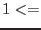

| Parameter | Mand | Type | Default | Constraints |
| intable | yes | dataset | inset.ds:SPECTRUM | |
The name of the fits dataset and table that contains the values to be smoothed.
|
| incolumn | yes | string | RATE | |
The name of the column in intable that contains the values to be smoothed.
|
| withouttable | no | boolean | no | yes|no |
If `yes', the task attempts to write the smoothed values to column outcolumn (and, optionally, outerrorscolumn) of dataset outtable; if `no', the task overwrites the values in incolumn.
|
| outtable | no | dataset | outset.ds:SPECTRUM | |
The name of the fits dataset and table which will contain the smoothed values.
|
| outcolumn | no | string | RATE | |
The name of the column in outtable which will contain the smoothed values.
|
| witherrors | no | boolean | no | yes|no |
If `yes', the task looks for uncertainties in incolumn in the column designated by inerrorscolumn.
|
| inerrorscolumn | no | string | STAT_ERR | |
The name of the column in intable that contains the uncertainties to incolumn. Only read if witherrors=`yes'.
|
| outerrorscolumn | no | string | STAT_ERR | |
The name of the column in outtable which will contain the uncertainties to the smoothed values in outcolumn. Only written if witherrors=`yes'.
|
| convolverstyle | no | string | tophat | set|tophat|gaussian|user |
Mode of entering the convolving function.
|
| convolvertable | no | dataset | convolver.ds:CONV | |
If convolvertype = `set', the names of the dataset+table which contain the convolver are read from this parameter.
|
| convolvercolumn | no | string | CONV | |
If convolvertype = `set', the name of the column which contains the convolver is read from this parameter.
|
| width | no | integer | 1 | width |
If convolvertype = `tophat', this parameter gives the width in channels of the top hat.
|
| sigma | no | real | 1.0 |  sigma sigma |
If convolvertype = `gaussian', this parameter gives the characteristic width of the gaussian.
|
| convolver | no | real list | '1.0' | |
If convolvertype = `user', the task reads the convolver directly from the list of real numbers contained in this parameter.
|
| normalize | no | boolean | yes | yes|no |
If `yes', the convolving function is normalised (ie, divided by the sum of all its values).
|
| maskstyle | no | string | none | set|expression|none |
Mode of entering the mask vector.
|
| masktable | no | dataset | mask.ds:MASK | |
If masktype = `set', the names of the dataset+table which contain the mask are read from this parameter.
|
| maskcolumn | no | string | MASK | |
If masktype = `set', the name of the column which contains the mask is read from this parameter.
|
| maskexpression | no | string | | |
If masktype = `expression', the task reads a selection expression from this parameter. Those rows of intable for which the expression evaluates to true cause the corresponding elements of the mask vector to be also set to true.
|
| fillholewidth | no | integer | |  fillholewidth fillholewidth |
Gaps in the mask of this width or less are interpolated.
|
| Parameter | Mand | Type | Default | Constraints |